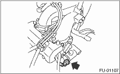

1. Release the fuel pressure. 
2. Disconnect the ground cable from the battery.

3. Open the fuel filler flap lid, and remove the fuel filler cap.
4. Remove the intake manifold.
5. Disconnect the connector from the tumble generator valve actuator and tumble generator valve position sensor.

6. Remove the fuel injector.
7. Remove the tumble generator valve body from intake manifold.